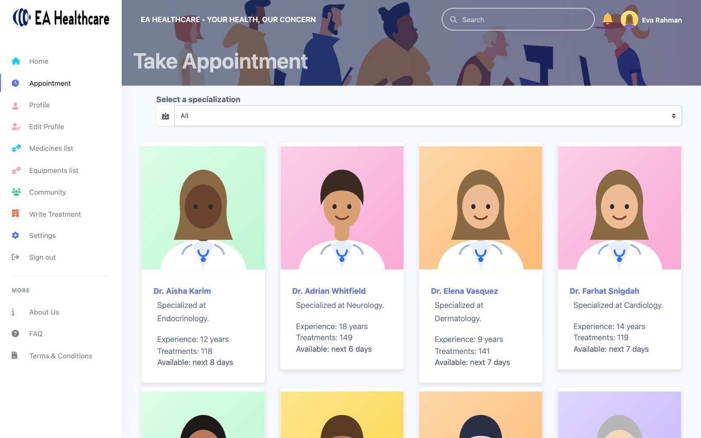
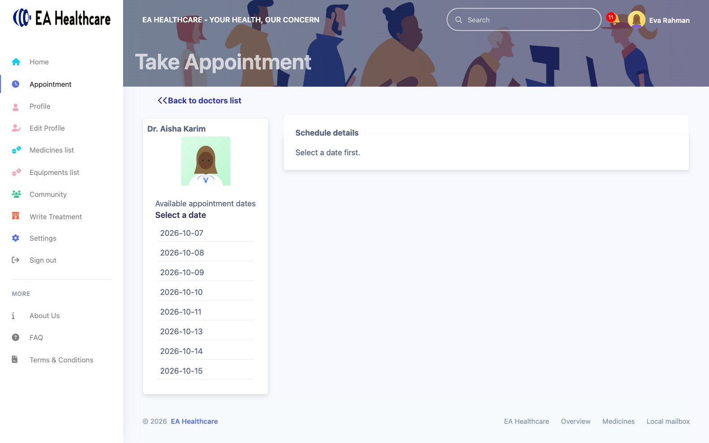
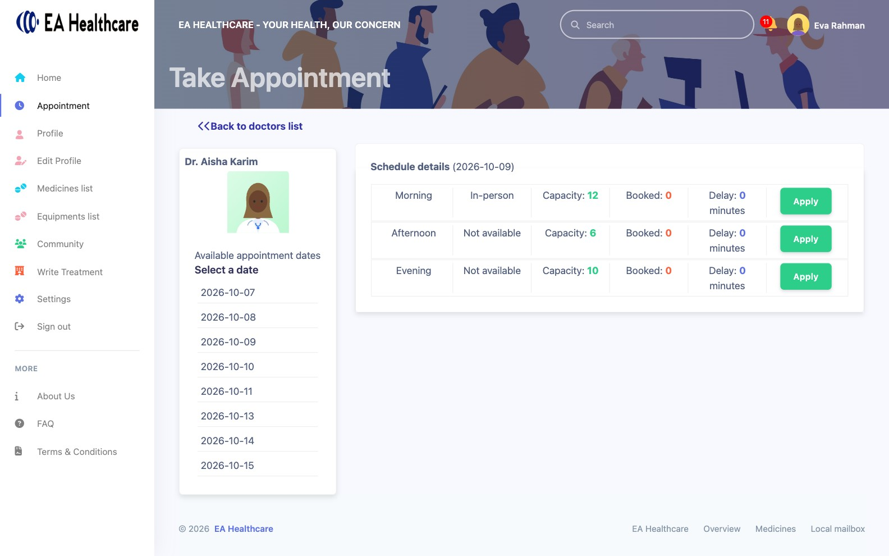
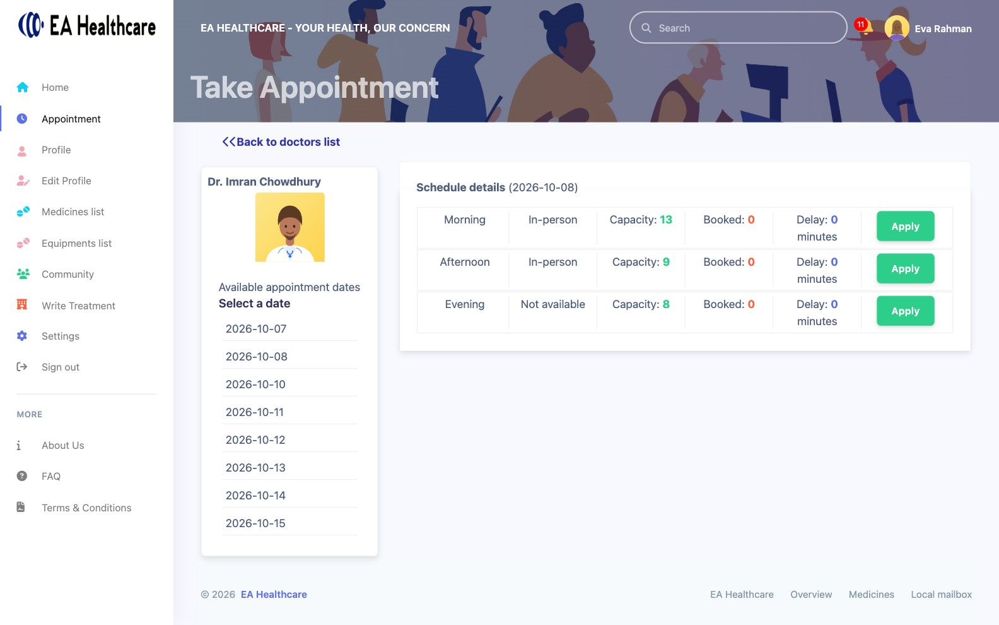

09:02
Eva books a slot
Eva Rahman
Every slot has a capacity set by the doctor. Booked counts are live, and a full slot is refused by the server, not just greyed out in the screen.
- 1 Capacity per slot, set by the doctor
- 2 Live booked count
- 3 Server refuses a full slot

1 · Choose a doctor
2 · Pick a day
3 · Pick a slot, with live capacity and delay
Under the hood
POST /appointmentsAppointment service :7400
Serial and time are computed from slot capacity and skip times already passed; a full slot answers 406 "The requested slot is already full".

123